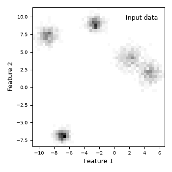
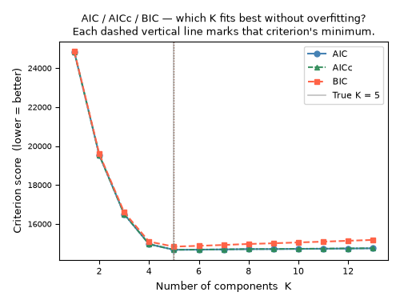
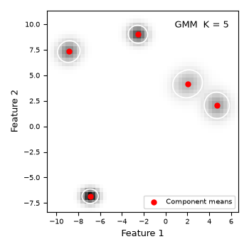
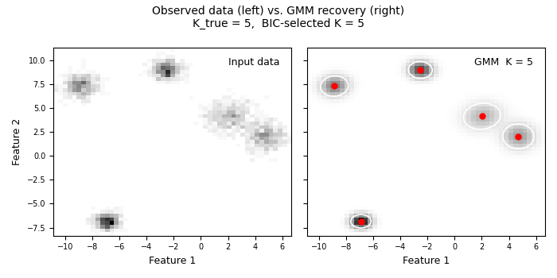

Gaussian Mixture Models — AIC, AICc, and BIC Model Selection#
What is a Gaussian Mixture Model?#
Imagine you have a scatter plot of data and you can see a few separate clusters. A Gaussian Mixture Model (GMM) formalises that intuition: it assumes the data came from K overlapping “blobs”, each shaped like a multivariate Gaussian (bell curve). We do not know K ahead of time — that is the whole point of this example. [1] [2] [3] [4] [5]
Mathematically, the model says:
p(x | θ) = Σ_j α_j · N(x | μ_j, Σ_j) for j = 1 … K
where:
K — number of blobs (unknown, to be selected)
α_j — how big / common blob j is (all α_j sum to 1)
μ_j — centre of blob j
Σ_j — shape and orientation of blob j (covariance matrix)
θ — shorthand for all of {α_j, μ_j, Σ_j} together
How does sklearn fit the model? (Expectation–Maximisation, EM)#
EM is an iterative two-step algorithm:
E-step For each data point, calculate how likely it is that each
blob generated it. These are called "responsibilities".
M-step Update α, μ, Σ so that the model better explains those
responsibilities.
EM repeats until the improvement per iteration falls below a threshold
(tol in sklearn, default 1e-3).
The trouble with just maximising log-likelihood#
Adding more blobs always makes the model fit the training data better — it can memorise every point if K is large enough. We need a way to penalise models that are more complex than the data actually warrants. That is what AIC, AICc, and BIC do.
The three criteria#
All three are computed from the same two ingredients:
- ln L* the log-likelihood after EM has converged
(bigger = the model explains the data better)
- p the number of free parameters in the model
(bigger = the model is more complex)
The formulas:
AIC = -2 ln L* + 2p
AICc = -2 ln L* + 2p + 2p(p+1) / (N - p - 1)
BIC = -2 ln L* + p · ln N
All three are lower-is-better. The -2 ln L* term rewards a good fit; the second term penalises complexity. The penalties differ:
AIC penalises each parameter by exactly 2.
AICc is AIC plus a small extra correction for small sample sizes.
When N is large the correction shrinks to zero and AICc ≈ AIC.
When N is small (rough rule: N/p < 40) the correction matters.
BIC penalises each parameter by ln N, which is > 2 for N > 7.
This makes BIC prefer sparser (fewer components) models.
When should I use each?#
- AIC — your goal is prediction. You are building a generative model
and you want the best out-of-sample log-likelihood. AIC’s softer penalty lets you keep richer structure when the data support it.
- AICc — same goal as AIC but your dataset is small or the number of
parameters p is large relative to N. Use AICc by default if you are unsure; for large N it converges to AIC anyway.
- BIC — your goal is structure recovery: you want to know the true
number of clusters, not just predict well. BIC’s stronger penalty makes it more likely to land on the right K when one exists. This example uses BIC to pick the final model.
Practical tip: always plot all three. If they all agree on K, you can be confident. If they disagree, the difference is usually just ±1 and you can inspect both models visually.
How to read the AIC / AICc / BIC curves#
Plot score (y-axis) vs K (x-axis).
The best K is at the minimum of the curve.
A sharp dip → the data strongly prefer that K.
- A flat plateau → nearby K values are nearly equivalent;
pick the smaller K (simpler is safer).
BIC minimum ≤ AIC minimum — BIC always penalises more, so its minimum shifts left. This is expected, not a bug.
Free parameter count for a full-covariance GMM on d-dimensional data#
means : K × d
covariances: K × d(d+1)/2 (symmetric matrix, upper triangle only)
weights : K - 1 (K weights constrained to sum to 1)
Total p = K × d + K × d(d+1)/2 + (K - 1)
For d=2 (this example): p = 2K + 3K + K - 1 = 6K - 1
For K=5: p = 29
This example#
We generate a 2-D dataset from K_true = 5 known Gaussian blobs. Having a ground truth lets us check whether the criteria recover the right K.
Steps:
1. Generate 2 000 points from 5 blobs with different spreads.
2. Fit GMMs for K = 1 … 13.
3. Compute AIC, AICc, and BIC for each K.
4. Pick K_best = argmin(BIC).
5. Produce four plots:
(a) raw 2-D data density (observed histogram)
(b) AIC / AICc / BIC curves with minima marked
(c) best-fit GMM density with component ellipses
(d) side-by-side: observed density vs. recovered density
Dependencies: NumPy, matplotlib, scikit-learn. Nothing else.
References#
See Also#
sklearn.mixture.GaussianMixture sklearn.datasets.make_blobs
Examples#
Run as a standalone script:
python plot_gaussian_mixture_models.py
Import individual helpers inside a notebook:
from plot_gaussian_mixture_models import fit_gmm_range, draw_ellipse
# Authors: The scikit-plots developers
# SPDX-License-Identifier: BSD-3-Clause
Section 1 — Imports#
import numpy as np
import matplotlib.pyplot as plt
from matplotlib.patches import Ellipse
from sklearn.datasets import make_blobs
from sklearn.mixture import GaussianMixture
# One seed controls everything: data generation, GMM initialisation,
# and the random-state of all helper functions.
RANDOM_STATE = 42
Section 2 — Utility functions#
def _gmm_n_params(k, d, covariance_type="full"):
"""Count the number of free parameters in a fitted GMM.
This is the ``p`` that goes into AIC, AICc, and BIC. sklearn computes
it internally for ``.aic()`` and ``.bic()``; we expose it here so we
can also compute AICc.
Parameters
----------
k : int
Number of Gaussian components.
d : int
Number of features (data dimensionality).
covariance_type : {'full', 'tied', 'diag', 'spherical'}, optional
Covariance structure. Default is ``'full'``.
Returns
-------
n_params : int
Total number of free parameters.
Notes
-----
Breakdown by covariance type (means + covariances + weights):
full K*d + K*d*(d+1)/2 + (K-1) — each component has its
own full covariance matrix (most expressive, most params).
tied K*d + d*(d+1)/2 + (K-1) — one shared covariance.
diag K*d + K*d + (K-1) — axis-aligned ellipses.
spherical K*d + K + (K-1) — circular blobs.
Examples
--------
>>> _gmm_n_params(k=5, d=2, covariance_type='full')
29
>>> _gmm_n_params(k=5, d=2, covariance_type='diag')
24
"""
cov_params = {
"full": k * d * (d + 1) // 2,
"tied": d * (d + 1) // 2,
"diag": k * d,
"spherical": k,
}
if covariance_type not in cov_params:
raise ValueError(
f"covariance_type must be one of {list(cov_params)}, "
f"got '{covariance_type}'."
)
return k * d + cov_params[covariance_type] + (k - 1)
def compute_aicc(aic, n_params, n_samples):
"""Compute the corrected AIC (AICc) from a plain AIC value.
AICc adds a finite-sample correction on top of AIC:
AICc = AIC + 2p(p+1) / (N - p - 1)
For large N the correction term shrinks toward zero and AICc ≈ AIC.
For small N (rough guide: N/p < 40) the correction is meaningful and
AICc is the safer choice over plain AIC.
Parameters
----------
aic : float
Plain AIC value from ``GaussianMixture.aic(X)``.
n_params : int
Number of free parameters ``p`` in the model. Use
:func:`_gmm_n_params` to compute this.
n_samples : int
Number of training data points ``N``.
Returns
-------
aicc : float
Corrected AIC value. Returns ``aic`` unchanged when
``N - p - 1 <= 0`` (degenerate case; treat result as unreliable).
Notes
-----
The correction term ``2p(p+1)/(N-p-1)`` is always positive, so
AICc >= AIC. When N is large the denominator dominates and the
two values converge.
Examples
--------
>>> compute_aicc(aic=1000.0, n_params=10, n_samples=200)
1001.1055276381909
>>> compute_aicc(aic=1000.0, n_params=10, n_samples=10_000)
1000.02202200220
"""
denom = n_samples - n_params - 1
if denom <= 0:
# N is so small relative to p that the correction is undefined.
# Return plain AIC and let the caller decide what to do.
return aic
return aic + 2.0 * n_params * (n_params + 1) / denom
def draw_ellipse(mean, covariance, ax, n_std=1.5, **kwargs):
"""Draw a confidence ellipse for one 2-D Gaussian component.
The ellipse captures roughly 74 % of the probability mass for a
2-D Gaussian when ``n_std=1.5`` (equivalent to a 1.5-sigma contour).
Internally, we decompose the covariance matrix into eigenvalues and
eigenvectors. The eigenvectors tell us the orientation of the ellipse;
the square-roots of the eigenvalues give the semi-axis lengths.
Parameters
----------
mean : array-like of shape (2,)
Centre of the Gaussian component.
covariance : array-like of shape (2, 2)
2×2 covariance matrix of the component.
ax : matplotlib.axes.Axes
The axes to draw on.
n_std : float, optional
Radius of the ellipse in standard deviations. Default is ``1.5``.
**kwargs
Forwarded to ``matplotlib.patches.Ellipse``. Common ones:
``fc`` (face colour), ``ec`` (edge colour), ``lw`` (line width).
Returns
-------
patch : matplotlib.patches.Ellipse
The patch that was added to *ax*.
Raises
------
ValueError
If *covariance* is not exactly 2×2.
Notes
-----
We use ``np.linalg.eigh`` rather than ``eig`` because the covariance
matrix is always symmetric. ``eigh`` exploits symmetry for numerical
stability and guarantees the eigenvalues come back real and sorted.
Examples
--------
>>> import matplotlib.pyplot as plt
>>> fig, ax = plt.subplots()
>>> patch = draw_ellipse([0, 0], [[1, 0.5], [0.5, 1]], ax=ax,
... n_std=2.0, fc='none', ec='black')
"""
covariance = np.asarray(covariance, dtype=float)
if covariance.shape != (2, 2):
raise ValueError(
f"covariance must be shape (2, 2), got {covariance.shape}."
)
# Decompose: eigenvectors = axes directions, eigenvalues = spread along axes
eigenvalues, eigenvectors = np.linalg.eigh(covariance)
# Sort largest eigenvalue first (primary axis first)
order = eigenvalues.argsort()[::-1]
eigenvalues = eigenvalues[order]
eigenvectors = eigenvectors[:, order]
# Angle of the primary axis relative to the x-axis (in degrees)
angle = np.degrees(np.arctan2(eigenvectors[1, 0], eigenvectors[0, 0]))
# Full axis lengths = 2 × n_std × sqrt(eigenvalue)
# np.maximum guards against tiny negative eigenvalues from floating-point
width = 2.0 * n_std * np.sqrt(np.maximum(eigenvalues[0], 0.0))
height = 2.0 * n_std * np.sqrt(np.maximum(eigenvalues[1], 0.0))
patch = Ellipse(xy=mean, width=width, height=height, angle=angle, **kwargs)
ax.add_patch(patch)
return patch
def fit_gmm_range(
X,
n_components_range,
covariance_type="full",
max_iter=200,
random_state=None,
):
"""Fit one GMM per value of K and return the models plus AIC, AICc, BIC.
We loop over every K in *n_components_range*, fit a
``GaussianMixture``, and collect AIC, AICc, and BIC. All models are
returned so the caller can inspect any of them (not just the best one).
Parameters
----------
X : array-like of shape (n_samples, n_features)
Training data.
n_components_range : array-like of int
The K values to try, e.g. ``range(1, 14)`` or ``[1, 2, 5, 10]``.
covariance_type : {'full', 'tied', 'diag', 'spherical'}, optional
How each component's covariance is parameterised. ``'full'``
(default) gives the most flexible shape but uses the most
parameters — see :func:`_gmm_n_params` for the count.
max_iter : int, optional
Hard cap on EM iterations per model. Default is ``200``.
Increase if you see ``gmm.converged_ == False`` in practice.
random_state : int or None, optional
Seed passed to every ``GaussianMixture`` for reproducibility.
Default is ``None`` (non-deterministic).
Returns
-------
models : list of GaussianMixture
One fitted model per K, in the same order as *n_components_range*.
aic_scores : list of float
AIC for each model. Lower is better.
aicc_scores : list of float
AICc for each model. Lower is better.
Equals AIC for large N; preferred when the dataset is small.
bic_scores : list of float
BIC for each model. Lower is better.
Raises
------
ValueError
If *n_components_range* is empty.
Notes
-----
``init_params='kmeans'`` (sklearn default) is used, which places the
initial component centres via k-means. This converges faster and more
reliably than random initialisation for typical datasets.
The AICc correction uses the free-parameter count from
:func:`_gmm_n_params`, which replicates sklearn's internal parameter
counting. The three criteria should therefore be mutually consistent.
Examples
--------
>>> import numpy as np
>>> rng = np.random.default_rng(0)
>>> X = rng.standard_normal((400, 2))
>>> models, aic, aicc, bic = fit_gmm_range(X, range(1, 6), random_state=0)
>>> len(models)
5
>>> best_k_bic = np.argmin(bic) + 1
"""
n_components_range = list(n_components_range)
if not n_components_range:
raise ValueError("n_components_range must not be empty.")
n_samples, n_features = np.asarray(X).shape
models, aic_scores, aicc_scores, bic_scores = [], [], [], []
for k in n_components_range:
gmm = GaussianMixture(
n_components=k,
covariance_type=covariance_type,
max_iter=max_iter,
random_state=random_state,
)
gmm.fit(X)
models.append(gmm)
aic_val = gmm.aic(X)
bic_val = gmm.bic(X)
p = _gmm_n_params(k, n_features, covariance_type)
aicc_val = compute_aicc(aic_val, n_params=p, n_samples=n_samples)
aic_scores.append(aic_val)
aicc_scores.append(aicc_val)
bic_scores.append(bic_val)
return models, aic_scores, aicc_scores, bic_scores
def compute_density_grid(gmm, x_bins, y_bins):
"""Evaluate the log-density of a fitted GMM on a regular 2-D grid.
We create a meshgrid from *x_bins* and *y_bins*, stack the grid points
into a (n_points, 2) array, ask the GMM for its log-probability at every
point, and reshape the result back to (n_y, n_x) so it can be passed
directly to ``imshow(origin='lower')``.
Parameters
----------
gmm : GaussianMixture
A fitted ``GaussianMixture`` instance.
x_bins : array-like of shape (n_x,)
x-coordinates of the grid (typically bin centres from a histogram).
y_bins : array-like of shape (n_y,)
y-coordinates of the grid.
Returns
-------
log_dens : numpy.ndarray of shape (n_y, n_x)
Log-probability density at each grid point.
Pass ``np.exp(log_dens)`` to get plain density for ``imshow``.
Notes
-----
``score_samples`` returns ``log p(x | θ)`` — the log of the mixture
density at each point. We keep it in log space until plotting to
avoid numerical underflow in sparse regions.
Examples
--------
>>> import numpy as np
>>> from sklearn.mixture import GaussianMixture
>>> X = np.random.randn(500, 2)
>>> gmm = GaussianMixture(n_components=2, random_state=0).fit(X)
>>> xb = np.linspace(-4, 4, 30)
>>> yb = np.linspace(-4, 4, 30)
>>> ld = compute_density_grid(gmm, xb, yb)
>>> ld.shape
(30, 30)
"""
xx, yy = np.meshgrid(x_bins, y_bins)
X_grid = np.column_stack([xx.ravel(), yy.ravel()])
log_dens = gmm.score_samples(X_grid).reshape(len(y_bins), len(x_bins))
return log_dens
def plot_density_panel(ax, image, extent, label, xlabel="Feature 1",
ylabel=None):
"""Show a 2-D density image on *ax* with consistent axes and labelling.
Parameters
----------
ax : matplotlib.axes.Axes
The axes to draw on.
image : numpy.ndarray of shape (n_y, n_x)
Density values — either raw histogram counts or ``exp(log_dens)``
from a GMM.
extent : list of float
``[x_min, x_max, y_min, y_max]`` passed directly to ``imshow``.
label : str
Short annotation placed in the upper-right corner of the panel.
xlabel : str, optional
x-axis label. Default is ``'Feature 1'``.
ylabel : str or None, optional
y-axis label. Pass ``None`` to omit (useful for right-hand panels
in a shared-axes layout).
Returns
-------
ax : matplotlib.axes.Axes
The same axes, modified in place.
"""
ax.imshow(
image,
origin="lower",
interpolation="nearest",
aspect="auto",
extent=extent,
cmap="binary",
)
ax.text(
0.95, 0.95, label,
va="top", ha="right",
transform=ax.transAxes,
fontsize=9,
)
ax.set_xlabel(xlabel, fontsize=9)
if ylabel is not None:
ax.set_ylabel(ylabel, fontsize=9)
ax.tick_params(labelsize=7)
return ax
Section 3 — Generate synthetic 2-D data#
Five blobs with deliberately different spreads (cluster_std). Varying the spreads makes the problem slightly harder and more realistic than equal-variance blobs.
K_TRUE is used only for validation at the end. The GMM fitting loop below never sees this value — it has to figure out K on its own.
K_TRUE = 5
N_SAMPLES = 2000
N_BINS = 51
X, y_true = make_blobs(
n_samples=N_SAMPLES,
centers=K_TRUE,
cluster_std=[0.6, 0.8, 0.5, 0.7, 0.9],
random_state=RANDOM_STATE,
)
Section 4 — Fit GMMs for K = 1 … 13; collect AIC, AICc, BIC#
We fit all models upfront so Sections 5–10 are just reads — no recomputation. max_iter=300 is generous for a 2-D problem; lower values are fine too.
N_RANGE = np.arange(1, 14)
models, AIC, AICC, BIC = fit_gmm_range(
X,
n_components_range=N_RANGE,
covariance_type="full",
max_iter=300,
random_state=RANDOM_STATE,
)
Section 5 — Pick the best model (minimum BIC)#
BIC is preferred here because our goal is recovering the true K, not maximising predictive accuracy. AICc is printed for comparison.
i_best = int(np.argmin(BIC))
gmm_best = models[i_best]
k_best = int(N_RANGE[i_best])
print(f"EM converged : {gmm_best.converged_}")
print(f"BIC-optimal K : {k_best} (true K = {K_TRUE})")
print(f"AIC-optimal K : {int(N_RANGE[np.argmin(AIC)])}")
print(f"AICc-optimal K : {int(N_RANGE[np.argmin(AICC)])}")
print()
print("Scores at BIC-optimal K:")
print(f" AIC = {AIC[i_best]:.1f}")
print(f" AICc = {AICC[i_best]:.1f} (delta from AIC: {AICC[i_best]-AIC[i_best]:.2f})")
print(f" BIC = {BIC[i_best]:.1f}")
print()
n_params_best = _gmm_n_params(k_best, d=2, covariance_type="full")
ratio = N_SAMPLES / n_params_best
print(f"N / p = {N_SAMPLES} / {n_params_best} = {ratio:.1f}")
if ratio < 40:
print(" → N/p < 40: AICc correction is meaningful here.")
else:
print(" → N/p >= 40: AICc ≈ AIC for this dataset (correction is tiny).")
EM converged : True
BIC-optimal K : 5 (true K = 5)
AIC-optimal K : 5
AICc-optimal K : 5
Scores at BIC-optimal K:
AIC = 14675.3
AICc = 14676.2 (delta from AIC: 0.88)
BIC = 14837.7
N / p = 2000 / 29 = 69.0
→ N/p >= 40: AICc ≈ AIC for this dataset (correction is tiny).
Section 6 — Build observed density (histogram) and GMM density grid#
x1_flat = X[:, 0]
x2_flat = X[:, 1]
# np.histogram2d returns counts in H[i, j] = count in bin (x_i, y_j).
# We transpose H before passing to imshow so that rows map to y and
# columns to x, consistent with origin='lower'.
H, x1_edges, x2_edges = np.histogram2d(x1_flat, x2_flat, bins=N_BINS)
x1_centres = 0.5 * (x1_edges[:-1] + x1_edges[1:])
x2_centres = 0.5 * (x2_edges[:-1] + x2_edges[1:])
log_dens = compute_density_grid(gmm_best, x1_centres, x2_centres)
# extent tells imshow the physical coordinate range of the image
extent = [x1_edges[0], x1_edges[-1], x2_edges[0], x2_edges[-1]]
Section 7 — Plot: raw observed density (what the data look like)#
This is the “before” panel — purely the data, no model involved.
fig, ax = plt.subplots(figsize=(3.5, 3.5))
plot_density_panel(
ax,
image=H.T,
extent=extent,
label="Input data",
xlabel="Feature 1",
ylabel="Feature 2",
)
fig.tight_layout()
plt.savefig("gmm_01_input_density.png", dpi=150)
plt.show()

Section 8 — Plot: AIC, AICc, and BIC curves#
- Reading guide (printed in the title too):
All three curves are lower-is-better.
The dip / elbow marks the recommended K for each criterion.
BIC minimum is usually at a smaller K than AIC/AICc — expected.
AICc ≈ AIC when N is large (lines nearly overlap in that case).
A flat region means the data cannot distinguish those K values well.
fig, ax = plt.subplots(figsize=(5, 3.8))
ax.plot(N_RANGE, AIC, "-o", color="steelblue", markersize=5, label="AIC")
ax.plot(N_RANGE, AICC, "^", color="seagreen", markersize=5, label="AICc",
linestyle=(0, (3, 1, 1, 1)), alpha=0.9) # dash-dot-dot
ax.plot(N_RANGE, BIC, "--s", color="tomato", markersize=5, label="BIC")
# Vertical lines mark each criterion's minimum
k_aic_opt = int(N_RANGE[np.argmin(AIC)])
k_aicc_opt = int(N_RANGE[np.argmin(AICC)])
k_bic_opt = k_best
ax.axvline(k_aic_opt, color="steelblue", lw=0.9, ls=":", alpha=0.8)
ax.axvline(k_aicc_opt, color="seagreen", lw=0.9, ls=":", alpha=0.8)
ax.axvline(k_bic_opt, color="tomato", lw=0.9, ls=":", alpha=0.8)
# Mark the true K with a grey bar so readers can see how close we got
ax.axvline(K_TRUE, color="grey", lw=1.2, ls="-",
label=f"True K = {K_TRUE}", alpha=0.5)
ax.set_xlabel("Number of components K", fontsize=9)
ax.set_ylabel("Criterion score (lower = better)", fontsize=9)
ax.set_title(
"AIC / AICc / BIC — which K fits best without overfitting?\n"
"Each dashed vertical line marks that criterion's minimum.",
fontsize=9,
)
ax.legend(fontsize=8)
ax.tick_params(labelsize=8)
plt.setp(ax.get_yticklabels(), fontsize=7)
fig.tight_layout()
plt.savefig("gmm_02_aic_aicc_bic.png", dpi=150)
plt.show()

Section 9 — Plot: best-fit GMM density + component ellipses#
Each red dot is a component mean. Each white ellipse is the ±1.5σ confidence region of one component — roughly where 74 % of that component’s probability mass sits. If the ellipses align with the visible blobs, the model has captured the data structure well.
fig, ax = plt.subplots(figsize=(3.5, 3.5))
plot_density_panel(
ax,
image=np.exp(log_dens),
extent=extent,
label=f"GMM K = {k_best}",
xlabel="Feature 1",
ylabel="Feature 2",
)
ax.scatter(
gmm_best.means_[:, 0],
gmm_best.means_[:, 1],
c="red", s=25, zorder=5, label="Component means",
)
for mu, cov in zip(gmm_best.means_, gmm_best.covariances_):
draw_ellipse(mu, cov, ax=ax, n_std=1.5, fc="none", ec="white", lw=1.2)
ax.legend(fontsize=7, loc="lower right")
fig.tight_layout()
plt.savefig("gmm_03_best_model.png", dpi=150)
plt.show()

Section 10 — Side-by-side: observed density vs. recovered density#
Left panel: the raw data histogram — what we measured. Right panel: the GMM density — what the model learned. Good agreement means the model captured the real structure; systematic differences reveal where the model is wrong.
fig, axes = plt.subplots(1, 2, figsize=(7, 3.5), sharey=True)
plot_density_panel(
axes[0],
image=H.T,
extent=extent,
label="Input data",
xlabel="Feature 1",
ylabel="Feature 2",
)
plot_density_panel(
axes[1],
image=np.exp(log_dens),
extent=extent,
label=f"GMM K = {k_best}",
xlabel="Feature 1",
)
axes[1].scatter(
gmm_best.means_[:, 0],
gmm_best.means_[:, 1],
c="red", s=25, zorder=5,
)
for mu, cov in zip(gmm_best.means_, gmm_best.covariances_):
draw_ellipse(mu, cov, ax=axes[1], n_std=1.5, fc="none", ec="white", lw=1.2)
fig.suptitle(
f"Observed data (left) vs. GMM recovery (right)\n"
f"K_true = {K_TRUE}, BIC-selected K = {k_best}",
fontsize=10,
)
fig.tight_layout()
plt.savefig("gmm_04_comparison.png", dpi=150)
plt.show()

Total running time of the script: (0 minutes 1.478 seconds)
Related examples

Memory-Mapping Showcase – Basic / Medium / Advanced

Enhanced KISS Random Generator - Complete Usage Examples